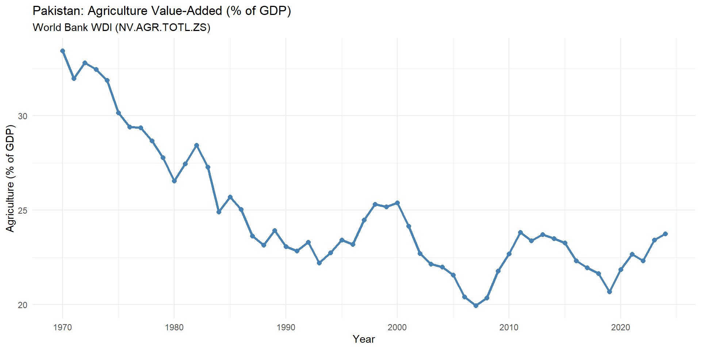
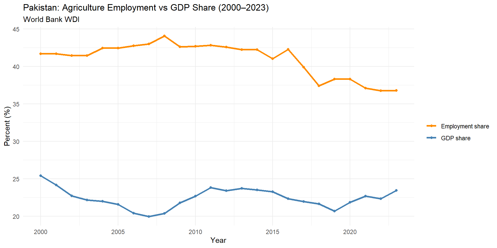
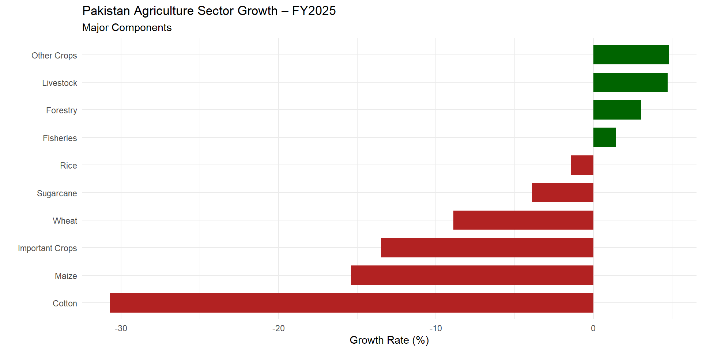

Structure, Challenges & Policy Trade-offs | Economy of Pakistan
Agriculture is not just farming — it is the foundation of Pakistan’s food security, rural employment, and export earnings.
Three core roles:

What the trend tells us:

The productivity gap:
| Sub-sector | Share of Agri GDP |
|---|---|
| Crops | ~38% |
| Livestock | ~61% |
| Forestry | ~1% |
| Fisheries | ~2% |
Key insight: Livestock is the single largest component — yet policy focus remains on crops.

Five crops dominate:
Under-discussed challenges:
| Crop | Pakistan | India | China | Bangladesh |
|---|---|---|---|---|
| Wheat (MT/ha) | 2.85 | 3.37 | 5.42 | 3.13 |
| Rice (MT/ha) | 2.52 | 3.88 | 7.03 | 4.74 |
| Sugarcane (MT/ha) | 61 | 80 | 77 | 40 |
| Tomato (MT/ha) | 9.4 | 24.6 | 59.4 | 13.7 |
Key takeaway: Pakistan consistently underperforms China and often India — countries with comparable or harder conditions.
Supply-side constraints:
Structural constraints:
Agriculture → Industry/Services
(surplus labor, (higher productivity,
low wages) higher wages)| Region | Agricultural Water Use |
|---|---|
| Pakistan | 94% of freshwater |
| South Asia avg. | 91% |
| MENA | 85% |
| Europe & Central Asia | 36% |
Pakistan is one of the most water-stressed agricultural systems on Earth.
Note
[Insert Chart] Indus Basin water availability trend + groundwater depletion rates
Source: IRSA / Pakistan Water Apportionment Accord data
The Indus System under stress:
| Crop | Water Requirement | Notes |
|---|---|---|
| Sugarcane | Very High | Most water-intensive crop grown |
| Rice (Kharif) | High | Punjab bans delayed to protect farmers |
| Wheat | Moderate | Winter crop, less pressure |
| Cotton | Moderate | Declining area → less demand |
Policy trap: Water-intensive crops are politically protected despite water scarcity.
Why it dominates:
Policy tensions:
The sugar economy:
The cycle:
Historical role: - Cotton → textile exports → largest export category - “White Gold” drove Punjab’s growth in the 1960s–80s
Current reality: - Cotton area: declined from ~3 million ha (peak) to ~2.2 million ha - Yield gap: Pakistan cotton yield below India and competing countries - Competition from polyester + pest resistance (Pink Bollworm)
Policy failure: - Seed quality not upgraded in decades - Extension services collapsed - No R&D investment to replace old varieties
| Province | Key Characteristics |
|---|---|
| Punjab | Breadbasket. Wheat, cotton, rice, maize. Avg farm: 5.6 acres. Irrigation-dependent. |
| Sindh | Feudal structures. Rice, cotton, sugarcane. Large farms (8.8 acres avg). Flood-prone. |
| KP | Small farms (3.6 acres). Tobacco, maize, fruits. Rainfed and terraced. Mountains limit scale. |
| Balochistan | Largest farms (22.7 acres). Dates, apples, pomegranates. Water scarce. Karez systems. |
Scale of the problem:
Why it happens:
Pakistan’s climate exposure:
Most vulnerable groups: - Small farmers with no insurance - Landless laborers with no fallback - Livestock-dependent households in arid zones
What’s needed:
What exists:
Pakistan’s input subsidies:
Who benefits?
Who is left out?
Formal credit access:
The collateral trap:
What has improved:
What hasn’t:
Fintech opportunity:
| If support prices are HIGH | If support prices are LOW |
|---|---|
| Farmer income protected | Farmers distressed |
| Fiscal burden rises | Government savings |
| Consumers pay more (urban inflation) | Market prices may stabilize |
| Crop choice distorted toward supported crops | Farmers diversify |
Pakistan’s experience: Wheat support prices have created a near-monoculture in irrigated Punjab.
| State-managed food system | Market-led food system |
|---|---|
| Predictable supply | Efficient allocation |
| Prone to corruption (PASSCO leakages) | Vulnerable to price spikes |
| Insulates poor from price shocks | Requires strong safety nets |
| Fiscal cost of procurement + storage | Lower fiscal burden |
Key question: Can Pakistan build social protection (cash transfers) strong enough to move away from commodity price controls?
| Maintain subsidies | Reform subsidies |
|---|---|
| Politically safe | Politically costly |
| Supports current input use | Redirects funds to R&D, extension |
| Rewards inefficiency | Rewards productivity |
| Fiscal drain | Fiscal space for investment |
International lesson: India’s fertilizer subsidy bill exceeds its agricultural R&D budget by a large multiple. Pakistan risks the same trap.
| Smallholder-first policy | Commercial farming promotion |
|---|---|
| Equity and poverty reduction | Productivity and scale |
| Politically popular | Politically sensitive |
| Hard to mechanize | Can adopt technology faster |
| Needs strong cooperative framework | Needs land market reform |
Pakistan’s reality: 80% of farms are below 12.5 acres. Any transformation must work with — not against — smallholders.
Five priority shifts:
Precision agriculture tools:
AgriFintech:
| Theme | Core Insight |
|---|---|
| Structure | Livestock > crops; sector is large but low-productivity |
| Water | 94% water use; Indus system under existential stress |
| Yields | Pakistan underperforms regional peers across all major crops |
| Policy | Support prices protect incomes but distort incentives |
| Climate | Agriculture is already on the front line of climate impacts |
| Reform | Trade-offs are real — no costless solutions |